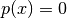
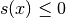

LevelSet¶
- class LevelSet(*args)¶
GeFEM LevelSet object
The level-set object is represented by a primary level-set and optionally a secondary level-set used to represent fractures (if p(x) is the primary level-set function and s(x) is the secondary level-set, the crack is defined by  and  : the role of the secondary is to determine the crack front/tip).
note:
All tools listed below need the package qhull installed on your system. This package is widely available. It computes convex hull and delaunay triangulations in arbitrary dimension.General constructor for LevelSet objects
LS = LevelSet(Mesh m, int d[, string 'ws'| string f1[, string f2 | string 'ws']]) Create a LevelSet object on a Mesh represented by a primary function (and optional secondary function, both) defined on a lagrange MeshFem of degree d.
If ws (with secondary) is set; this levelset is represented by a primary function and a secondary function. If f1 is set; the primary function is defined by that expression (with the syntax of the high generic assembly language). If f2 is set; this levelset is represented by a primary function and a secondary function defined by these expressions.
- char()¶
Output a (unique) string representation of the LevelSet.
This can be used to perform comparisons between two different LevelSet objects. This function is to be completed.
- degree()¶
Return the degree of lagrange representation.
- display()¶
displays a short summary for a LevelSet.
- memsize()¶
Return the amount of memory (in bytes) used by the level-set.
- mf()¶
Return a reference on the MeshFem object.
- set_values(*args)¶
Synopsis: LevelSet.set_values(self, {mat v1|string func_1}[, mat v2|string func_2])
Set values of the vector of dof for the level-set functions.
Set the primary function with the vector of dof v1 (or the expression func_1) and the secondary function (if any) with the vector of dof v2 (or the expression func_2)
- simplify(eps=0.01)¶
Simplify dof of level-set optionally with the parameter eps.
- values(nls)¶
Return the vector of dof for nls funtion.
If nls is 0, the method return the vector of dof for the primary level-set funtion. If nls is 1, the method return the vector of dof for the secondary level-set function (if any).

前のトピックへ
次のトピックへ
Download
Main documentations
- GetFEM++ User documentation
- Python Interface
- Matlab Interface
- Scilab Interface
- Gmm++
- GetFEM++ project